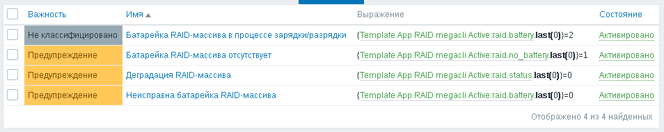
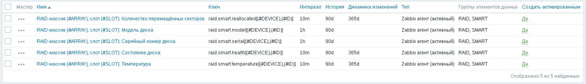

Эта заметка продолжает идеи предыдущих заметок, описывающих контроль аппаратных RAID-массивов и параметров S.M.A.R.T. жёстких дисков:
На этот раз мы поставим на контроль средствами Zabbix не только аппаратные RAID-массивы на основе контроллеров LSI MegaRAID SAS, но и параметры S.M.A.R.T. жёстких дисков, подключенных к этому RAID-контроллеру. В отличие от прошлой заметки по S.M.A.R.T., где использовался общий для всех дисков порог по количеству перемещённых секторов и секторов, ожидающих перемещения, на этот раз в шаблоне будет предусмотрена индивидуальная настройка порогов для каждого из дисков.
Для контроля состояния аппаратного RAID-массива нам понадобится утилита megacli. Установить утилиту megacli в Debian можно из неофициального репозитория HwRAID. Например, чтобы подключить репозиторий в Debian Stretch, нужно добавить в файл /etc/apt/sources.list такую строчку:
deb http://hwraid.le-vert.net/debian stretch main
Установим в систему GPG-ключ для проверки подлинности репозитория при помощи команды:
# wget -O - https://hwraid.le-vert.net/debian/hwraid.le-vert.net.gpg.key | apt-key add -
Теперь можно обновить список пакетов, доступных для установки из репозиториев:
# apt-get update
И установить утилиту mecacli для управления RAID-контроллером:
# apt-get install megacli
Утилита smartctl имеется в официальных репозиториях Debian, установить её можно при помощи следующей команды:
# apt-get install smartmontools
Также для получения списка SAS-дисков (они же - Serial Attached SCSI) нам понадобится также утилита lsscsi, которую можно установить из одноимённого пакета. Пакет lsscsi тоже имеется в официальных репозиториях, установим его:
# apt-get install lsscsi
Теперь пользователю zabbix, от имени которого работает Zabbix-агент, дать права вызывать утилиты megacli и smartctl. Для этого воспользуемся утилитой sudo. Если она ещё не установлена, то установить её можно при помощи команды:
# apt-get install sudo
Запускаем visudo для редактирования прав доступа через sudo:
# visudo
Добавим следующую строчку, чтобы Zabbix-агент мог вызывать утилиту sudo в неинтерактивном режиме:
Defaults:zabbix !requiretty
Добавляем права запускать megacli и smartctl:
zabbix ALL=(ALL) NOPASSWD: /usr/sbin/megacli -LDInfo -Lall -aALL, \
/usr/sbin/megacli -AdpBbuCmd -GetBbuStatus -aALL, \
/usr/sbin/megacli -PdList -aALL, \
/usr/sbin/smartctl -d megaraid\,* -i *, \
/usr/sbin/smartctl -d megaraid\,* -H *, \
/usr/sbin/smartctl -d megaraid\,* -A *
Создаём скрипт /etc/zabbix/megacli.sh:
#!/bin/sh
(/usr/bin/lsscsi 2>&1 ; /usr/bin/sudo /usr/sbin/megacli -PdList -aALL 2>&1) \
| /usr/bin/awk -F: 'BEGIN { print "{\"data\": [";
n = 0; }
/^\[/ { split($0, cols, / +/);
hctl = cols[1];
device = cols[6];
gsub(/\[/, "", hctl);
gsub(/\]/, "", hctl);
split(hctl, cols, /:/);
array = cols[1];
array_device[array] = device; }
/^Adapter #/ { split($0, cols, /\#/);
array = cols[2]; }
$1 ~ /^Slot Number$/ { slot = $2; }
$1 ~ /^Device Id$/ { id = $2;
if (n > 0)
printf ",\n";
printf "{\"{#DEVICE}\": \"%s\", ", array_device[array];
printf "\"{#ARRAY}\": \"%d\", ", array;
printf "\"{#SLOT}\": \"%d\", ", slot;
printf "\"{#ID}\": \"%d\"}", id;
n += 1; }
END { printf "\n]}"; }'
Выставляем права доступа к скрипту:
# chown root:root /etc/zabbix/megacli.sh # chmod u=rwx,go=rx /etc/zabbix/megacli.sh
Добавляем в файл /etc/zabbix/zabbix_agentd.conf следующие строчки:
UserParameter=raid.status,/usr/bin/sudo /usr/sbin/megacli -LDInfo -Lall -aALL | /usr/bin/awk 'BEGIN { s = 1; } /^State.*:.*(No.*ptimal|Degraded)$/ { s = 0; } END { print s; }'
UserParameter=raid.no_battery,/usr/bin/sudo /usr/sbin/megacli -AdpBbuCmd -GetBbuStatus -aALL | /bin/grep -cE '(Battery Pack Missing.*es|Battery State.*Missing|The required hardware component is not present)'
UserParameter=raid.battery,/usr/bin/sudo /usr/sbin/megacli -AdpBbuCmd -GetBbuStatus -aALL | /usr/bin/awk 'BEGIN { s = 1; } /^Battery State: *Not? (Optimal|Operational)/ { s = 0; } /^Battery State: *(Learning|Charging|Discharging)/ { s = 2; } END { print s; }'
UserParameter=raid.smart.list,/etc/zabbix/megacli.sh
UserParameter=raid.smart.model[*],/usr/bin/sudo /usr/sbin/smartctl -d megaraid,$2 -i $1 2>&1 | /usr/bin/awk -F: '$$1 ~ /^Vendor$/ { gsub(/(^ +| +$)/, "", $$2); model = $$2; } $$1 ~ /^Product$/ { gsub(/(^ +| +$)/, "", $$2); print model " " $$2; }'
UserParameter=raid.smart.serial[*],/usr/bin/sudo /usr/sbin/smartctl -d megaraid,$2 -i $1 2>&1 | /usr/bin/awk -F: '$$1 ~ /^Serial number$/ { gsub(/(^ +| +$)/, "", $$2); print $$2; }'
UserParameter=raid.smart.health[*],/usr/bin/sudo /usr/sbin/smartctl -d megaraid,$2 -H $1 2>&1 | /usr/bin/awk 'BEGIN { h = 0; } / (OK|PASSED)$/ { h = 1; } END { print h; }'
UserParameter=raid.smart.reallocated[*],/usr/bin/sudo /usr/sbin/smartctl -d megaraid,$2 -A $1 2>&1 | /usr/bin/awk -F: '$$1 ~ /^Elements in grown defect list$/ { print $$2; }'
UserParameter=raid.smart.temperature[*],/usr/bin/sudo /usr/sbin/smartctl -d megaraid,$2 -A $1 2>&1 | /usr/bin/awk -F: '$$1 ~ /^Current Drive Temperature$/ { gsub(/ C/, "", $$2); print $$2; }'
Осталось перезапустить Zabbix-агента:
# systemctl restart zabbix-agent
Загружаем модуль ядра mfip, который позволяет считывать параметры S.M.A.R.T. сквозь RAID-контроллер:
# kldload mfip
Прописываем его в автозагрузку в файле /boot/loader.conf:
mfip_load="YES"
Как и в случае с Linux, во FreeBSD нам понадобятся утилиты megacli, smartctl и sudo. К счастью, все их можно установить из портов systuils/megacli, sysutils/sudo и sysutils/smartmontools:
# cd /usr/port/sysutils/megacli # make install # cd /usr/port/sysutils/smartmontools # make install # cd /usr/ports/sysutils/sudo # make install
Также для получения списка дисков нам потребуется утилита, аналогичная lsscsi в Linux. Во FreeBSD для этого воспользуемся утилитой camcontrol, которая имеется в базовой системе.
Запускаем visudo для редактирования прав доступа через sudo:
# visudo
Добавим следующую строчку, чтобы Zabbix-агент мог вызывать утилиту sudo в неинтерактивном режиме:
Defaults:zabbix !requiretty
Добавляем права запускать camcontrol и smartctl:
%zabbix ALL=(ALL) NOPASSWD:/usr/local/sbin/MegaCli -PdList -aALL, \
/usr/local/sbin/MegaCli -LDInfo -Lall -aALL, \
/usr/local/sbin/MegaCli -AdpBbuCmd -GetBbuStatus -aALL, \
/sbin/camcontrol rescan all, \
/sbin/camcontrol devlist, \
/usr/local/sbin/smartctl -i *, \
/usr/local/sbin/smartctl -H *, \
/usr/local/sbin/smartctl -A *
Создаём скрипт /usr/local/etc/zabbix34/megacli.sh:
#!/bin/sh
/usr/local/bin/sudo /sbin/camcontrol rescan all >/dev/null 2>/dev/null
(/usr/local/bin/sudo /sbin/camcontrol devlist 2>&1 ; /usr/local/bin/sudo /usr/local/sbin/MegaCli -PdList -aALL 2>&1) \
| /usr/bin/awk -F: 'BEGIN { print "{\"data\": [";
n = 0; }
/scbus/ { match($0, /scbus[0-9]+ /);
array = substr($0, RSTART + 5, RLENGTH - 6);
match($0, /target [0-9]+ /);
id = substr($0, RSTART + 7, RLENGTH - 8);
match($0, /\(.+[0-9]+\)/);
device_with_id = substr($0, RSTART + 1, RLENGTH - 2);
match(device_with_id, /[0-9]+/);
device = "/dev/" substr(device_with_id, 1, RSTART - 1);
device_id = substr(device_with_id, RSTART, RLENGTH);
array_device[array "_" id] = device;
array_device_id[array "_" id] = device_id; }
/^Adapter #/ { split($0, cols, /\#/);
array = cols[2]; }
$1 ~ /^Slot Number$/ { slot = $2; }
$1 ~ /^Device Id$/ { id = $2 + 0;
if (n > 0)
printf ",\n";
printf "{\"{#DEVICE}\": \"%s\", ", array_device[array "_" id];
printf "\"{#ARRAY}\": \"%d\", ", array;
printf "\"{#SLOT}\": \"%d\", ", slot;
printf "\"{#ID}\": \"%d\"}", array_device_id[array "_" id];
n += 1; }
END { printf "\n]}"; }'
Добавляем в файл /usr/local/etc/zabbix34/zabbix_agentd.conf следующие строчки:
UserParameter=raid.status,/usr/local/bin/sudo /usr/local/sbin/MegaCli -LDInfo -Lall -aALL 2>&1 | /usr/bin/awk 'BEGIN { s = 1; } /^State.*:.*(No.*ptimal|Degraded)$/ { s = 0; } END { print s; }'
UserParameter=raid.no_battery,/usr/local/bin/sudo /usr/local/sbin/MegaCli -AdpBbuCmd -GetBbuStatus -aALL 2>&1 | /usr/bin/grep -cE '(Battery Pack Missing.*es|Battery State.*issing|The required hardware component is not present)'
UserParameter=raid.battery,/usr/local/bin/sudo /usr/local/sbin/MegaCli -AdpBbuCmd -GetBbuStatus -aALL 2>&1 | /usr/bin/awk 'BEGIN { s = 1; } /^Battery State: *Not? (Optimal|Operational)/ { s = 0; } /^Battery State: *(Learning|Charging|Discharging)/ { s = 2; } END { print s; }'
UserParameter=raid.smart.list,/usr/local/etc/zabbix34/megacli.sh
UserParameter=raid.smart.model[*],/usr/local/bin/sudo /usr/local/sbin/smartctl -i $1$2 2>&1 | /usr/bin/awk -F: '$$1 ~ /^Vendor$/ { gsub(/(^ +| +$)/, "", $$2); model = $$2; } $$1 ~ /^Product$/ { gsub(/(^ +| +$)/, "", $$2); print model " " $$2; }'
UserParameter=raid.smart.serial[*],/usr/local/bin/sudo /usr/local/sbin/smartctl -i $1$2 2>&1 | /usr/bin/awk -F: '$$1 ~ /^Serial number$/ { gsub(/(^ +| +$)/, "", $$2); print $$2; }'
UserParameter=raid.smart.health[*],/usr/local/bin/sudo /usr/local/sbin/smartctl -H $1$2 2>&1 | /usr/bin/awk 'BEGIN { h = 0; } / (OK|PASSED)$/ { h = 1; } END { print h; }'
UserParameter=raid.smart.reallocated[*],/usr/local/bin/sudo /usr/local/sbin/smartctl -A $1$2 2>&1 | /usr/bin/awk -F: '$$1 ~ /^Elements in grown defect list$/ { print $$2; }'
UserParameter=raid.smart.temperature[*],/usr/local/bin/sudo /usr/local/sbin/smartctl -A $1$2 2>&1 | /usr/bin/awk -F: '$$1 ~ /^Current Drive Temperature$/ { gsub(/ C/, "", $$2); print $$2; }'
Выставялем права доступа к скрипту:
# chown root:wheel /usr/local/etc/zabbix34/megacli.sh # chmod u=rwx,go=rx /usr/local/etc/zabbix34/megacli.sh
Перезапускаем Zabbix-агента:
# /usr/local/etc/rc.d/zabbix_agentd restart
Я подготовил два шаблона для контроля состояния RAID-контроллера и параметров S.M.A.R.T. жёстких дисков, которые к нему подключены:
В шаблоне есть три элемента данных. Один контролирует целостность RAID-массивов, второй - наличие батарей в контроллерах, третий - состояние каждой из батарей:
Каждому из упомянутых элементов данных соответствует один триггер и ещё один триггер срабатывает, если батарея контроллера заряжается или разряжается:
Для обнаружения жёстких дисков, подключенных к RAID-контроллеру, создано правило низкоуровневого обнаружения:
В правиле имеется 5 прототипов элементов данных для контроля параметров S.M.A.R.T. каждого жёсткого диска. Раз в час снимаются модель диска и его серийный номер, раз в 10 минут снимаются данные об исправности диска, его температуре и количестве перемещённых секторов:
Кроме прототипов элементов данных в правиле низкоуровневого обнаружения имеются прототипы триггеров, которые контролируют исправность диска и количество перемещённых секторов:
Для настройки порога срабатывания триггера по количеству перемещённых секторов в шаблоне имеется макрос {$SMART_REALLOCATED_LIMIT}, значение которого по умолчанию равно нулю:
Как можно заметить, в выражениях триггеров этот макрос используется в виде {$SMART_REALLOCATED_LIMIT:"{#ARRAY}/{#SLOT}"}. Макросы такого вида описаны в Руководстве по Zabbix, 7 Настройка, 10 Макросы, 2 Пользовательские макросы, Контекст пользовательских макросов.
При срабатывании триггера вида "RAID-массив 0, слот 2: Количество перемещённых секторов 13 > 0" можно переопределить значение макроса для конкретного диска. Чтобы погасить этот триггер, на уровне узла можно определить макрос {$SMART_REALLOCATED_LIMIT:0/2} со значением 13. Порог срабатывания триггеров на других жёстких дисках останется прежним - будет использоваться значение по умолчанию, взятое из шаблона.